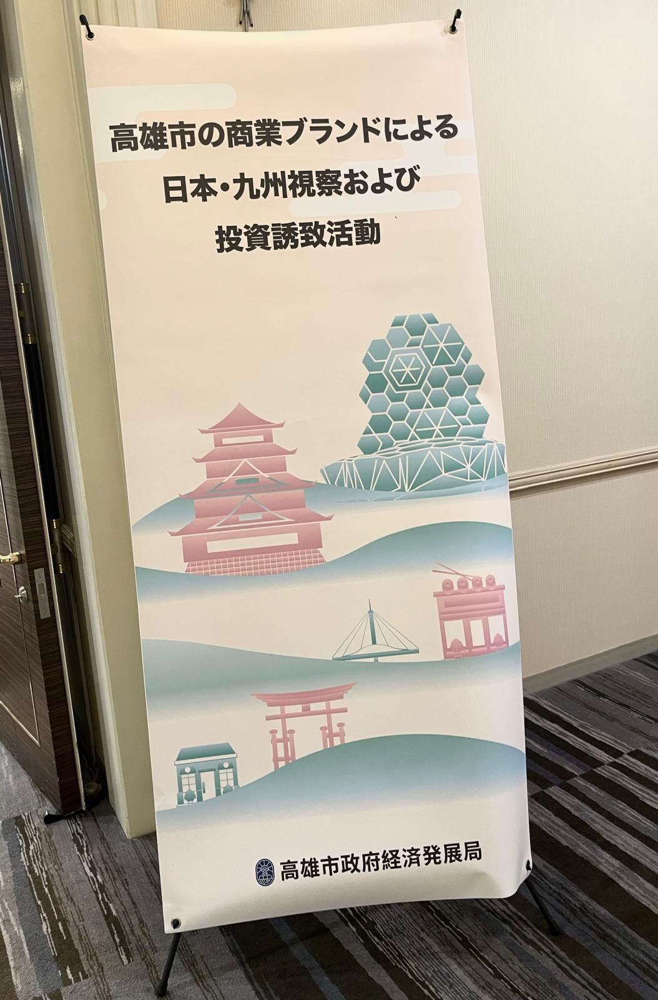

Flagship Project — サンパウロ日本祭り
ふるさと“いいもの”展
第26回サンパウロ日本祭り（来場者約20万人）内で開催。2024年の第1回から支援し、2025年の第2回では47都道府県104社が出展、現地インポーター・小売店・レストラン関係者ら約1,100名が来場する規模に拡大。弊社は6ブース8都道府県を担当しました。
→ 2026年の第3回では企画・運営として参画。詳しく見る →

Niigata Prefecture — サンパウロ日本祭り
新潟県産品の輸出促進イベント
2026年8月22日、サンパウロのNIKKEY PALACE HOTELで新潟県産品の輸出促進イベントを開催。新潟県・花角英世知事も登壇し、日本酒・米菓・和牛・調理器具など県産品を紹介。現地の飲食・流通業界関係者120人余りが来場しました。
→ 新潟県産農林水産物の輸出額は2025年度に86億9千万円と過去最高を記録。詳しく見る →

Taiwan — 高雄市政府経済発展局
日本・九州視察およびブランドマッチング商談会
台湾・高雄市政府経済発展局が主催した「高雄市の商業ブランドによる日本・九州視察および投資誘致活動」において、ブランドマッチング商談会の開催・交流支援を担当。ブランド経営、商品開発、店舗運営、販路開拓、市場拡大の可能性について意見交換を行いました。
→ 日台双方のブランド連携に向けた可能性を確認する機会に。